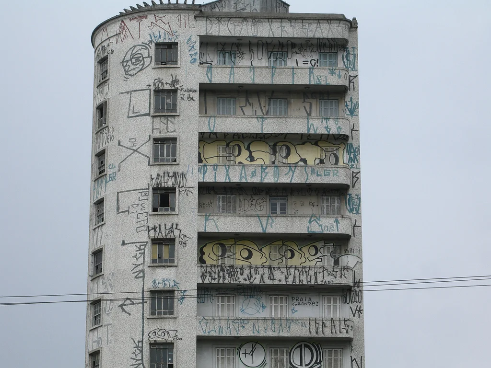
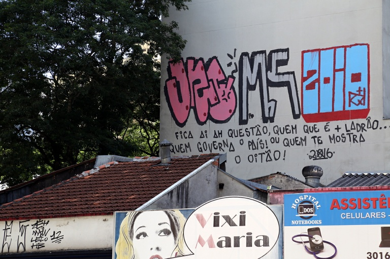
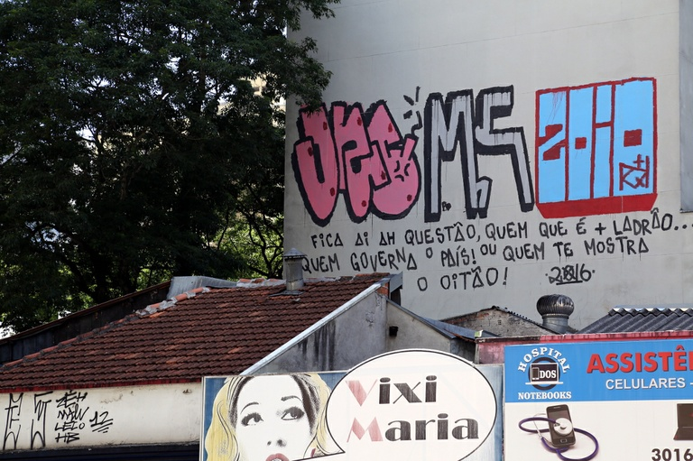
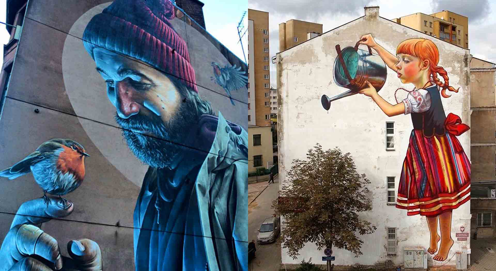
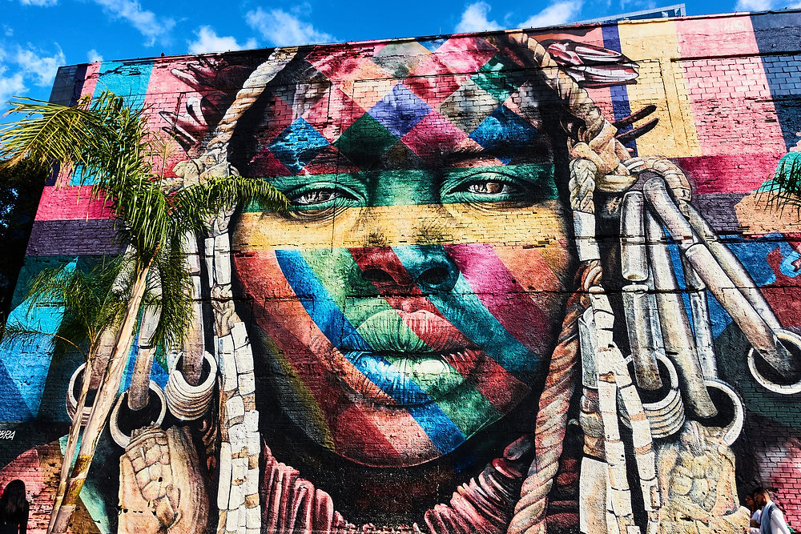
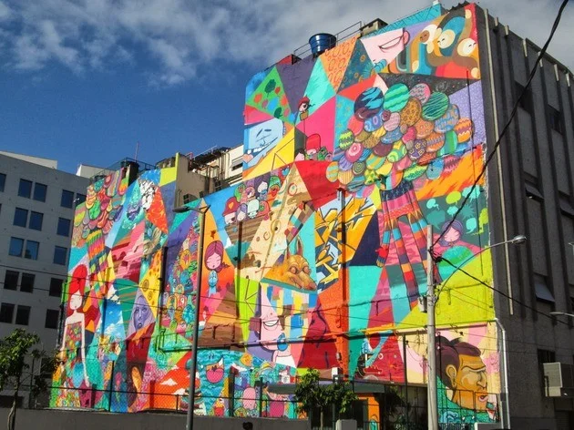

O que difere essas duas práticas, contudo, são as formas das pinturas. A pichação, geralmente, é feita em tinta preta e contém símbolos ou dizeres. O grafite, por sua vez, se refere a desenhos.
| grafite | pixo | oem comun |
|---|---|---|
| murros | paredes | igual |
| spray | squizzer | os dois |
| pincel | caneta | bota fe |
A pichação
As pichações são expressões gráficas pintadas em muros e edificações das cidades. Podem ser palavras, textos ou mesmo imagens. Considerada crime no Brasil, a pichação é utilizada como forma de expressão de grupos marginalizados da sociedade, em especial, jovens das favelas.
Os participantes do movimento, defendem que a pichação é arte, pois é uma forma de expressão, porém uma parcela da população considera o ato como vandalismo.
Finalidade das pichações
A pichação é considerada um ato político, principalmente de jovens da periferia, que usam as paredes da cidade para se comunicar e protestar contra as desigualdades sociais dos centros urbanos. Frente às dificuldades de serem ouvidos pelos representantes políticos, esses grupos se utilizam das pichações para fazer denúncias e expressar sua opinião.
Mas nem todas as pichações trazem protestos ou manifestações políticas. Muitas pichações, inclusive, são indecifráveis, já que os grupos de pichação criam grafias próprias e assinaturas que são reconhecidas apenas entre os grupos do movimento, essas assinaturas são conhecidas pelos integrantes dos grupos por “pixo”.
 

O grafite
O grafite é um tipo de arte urbana caracterizado pela produção de desenhos em locais públicos como paredes, edifícios, ruas, etc. É bastante usado como forma de crítica social, e, além disso, é uma maneira de intervenção direta na cidade, democratizando assim, os espaços públicos.
O grafite costuma ser dividido em dois grupos: spray art, promovida com o uso de spray, em geral de modo rápido, utilizando formas ou palavras simples e breves; stencil art, feita a partir de um cartão com formas recortadas que são colocadas no local desejado e recebem o spray de tinta.
Qual a mensagem que o grafite transmite?
Promove uma visão mais crítica do mundo, pois boa parte dos grafites transmitem mensagens de cunho social apontando problemas da comunidade ou sociedade.
Através do graffiti, a cidade é preenchida por um novo significado, uma diversidade de mensagens, desenhos e expressões realizadas por artistas, tornando-se um importante meio de expressão, registrando histórias e manifestações, conservando as identidades das comunidades locais.
  